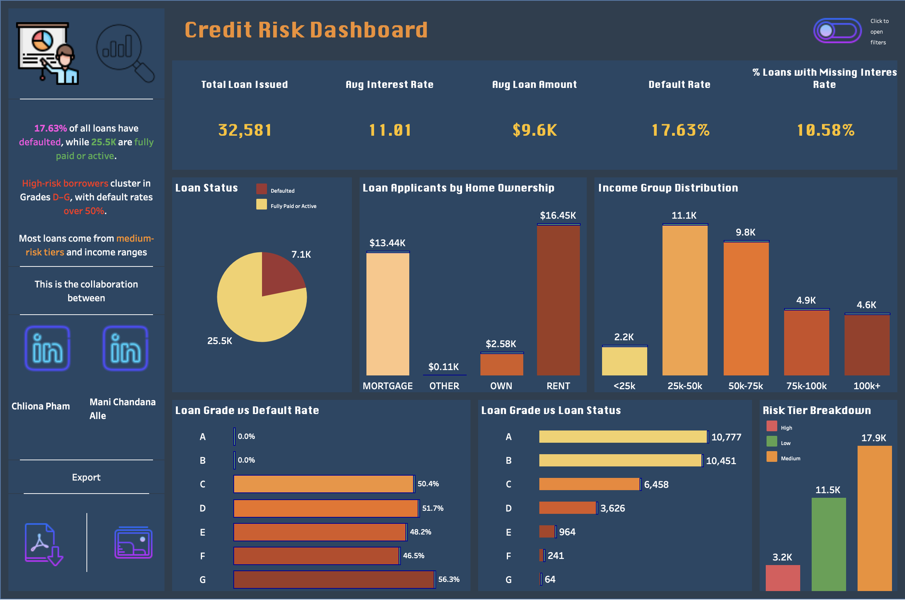

Credit Risk Dashboard
Built with Tableau and SQL
Dashboard Preview

This dashboard analyzes credit risk patterns using loan data. I explored borrower demographics, loan grade performance, risk tiers, and default trends to support decision-making in financial risk management.
Tools & Technologies
- Tableau Public (for data visualization)
- MySQL (for data preparation and exploration)
- Excel (data cleaning)
- Icons8 (for dashboard icons and visuals)
Dashboard Highlights
- KPI Overview: Displays total loans issued, average interest rate, average loan amount, default rate, and % of loans with missing interest rate.
- Loan Status Analysis: Pie chart visualizing defaulted vs. fully paid/active loans (7.1K vs. 25.5K).
- Demographics: Breakdown by income group and home ownership type (renters, mortgage, own, other).
- Loan Grades vs Default Rates: Grades D–G have over 50% default rates; Grades A & B have 0%.
- Loan Grade vs Loan Status: Visualizes loan counts per grade, color-coded by repayment status (active or defaulted).
- Risk Tier Breakdown: Classifies loans into high, medium, and low risk categories.
- Loan Record Table: Searchable and filterable table view with key fields like loan grade, intent, income group, and ownership.
Key Insights
- Default rate: 17.63% — mostly concentrated in grades D to G
- High-risk loans are often associated with lower income and missing interest rate data
- Most borrowers fall between the $25K–$75K income range
- Home renters and mortgage holders represent the largest loan volumes
Acknowledgment
This project was developed in collaboration with Mani Chandana Alle. Inspired by real-world financial risk use cases and styled with resources from Icons8.